and delete
Highlight this model and see the involved grids bd_all and struktur in the statusbar.
the new grid nahr_schreiadler will be shown: 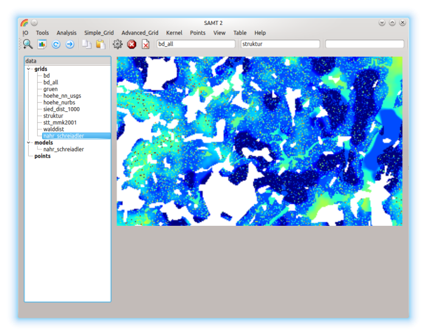
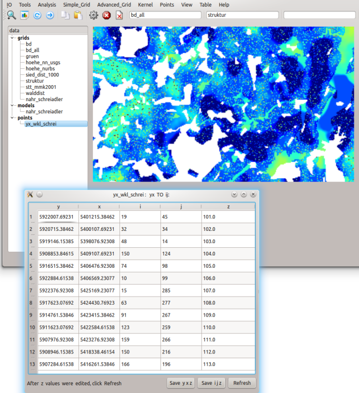

Highlight this model, the statusbar shows the involved grids.
Set P1=nahr_schreiadler, P2=walddist, P3=yx_wkl_schrei as stoerdist(ance).
Here are the images of these three grids:
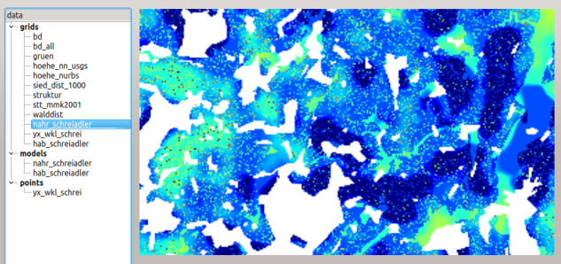
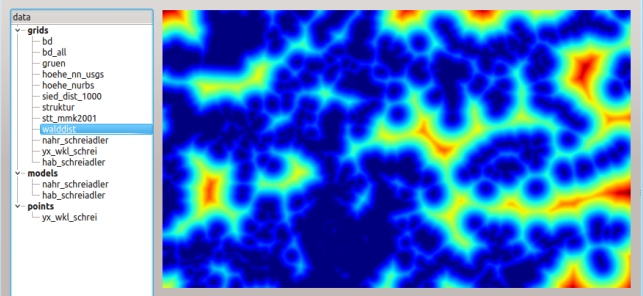
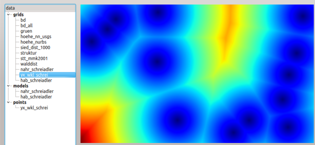
The result is the new grid hab_schreiadler, here with View: Colorbar
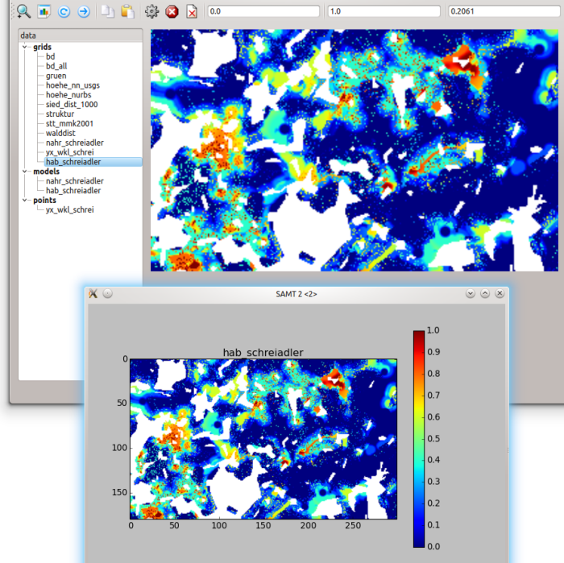
and sets P1=min, P2=max, P3=mean
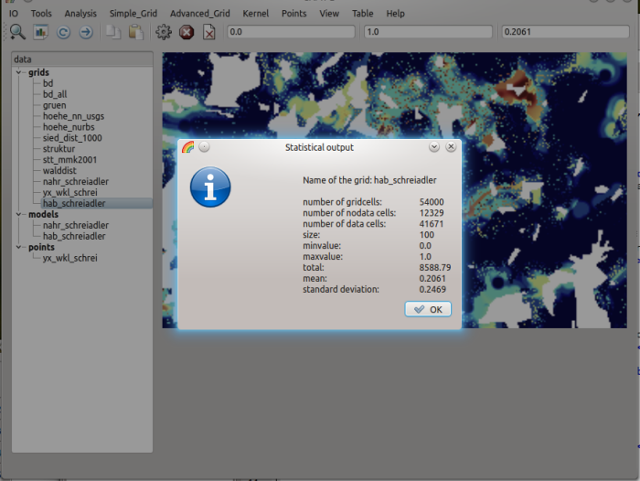
To start it, it must be given:
fuzzy input1 in P1
fuzzy input2 in P2
fuzzy input3 in P3
highlighted the fuzzy model
To investigate a point in the result map of a fuzzy model, please click with the left mouse bottom on it. The rule inspector is simply a table. The table will be filled with informations like this:
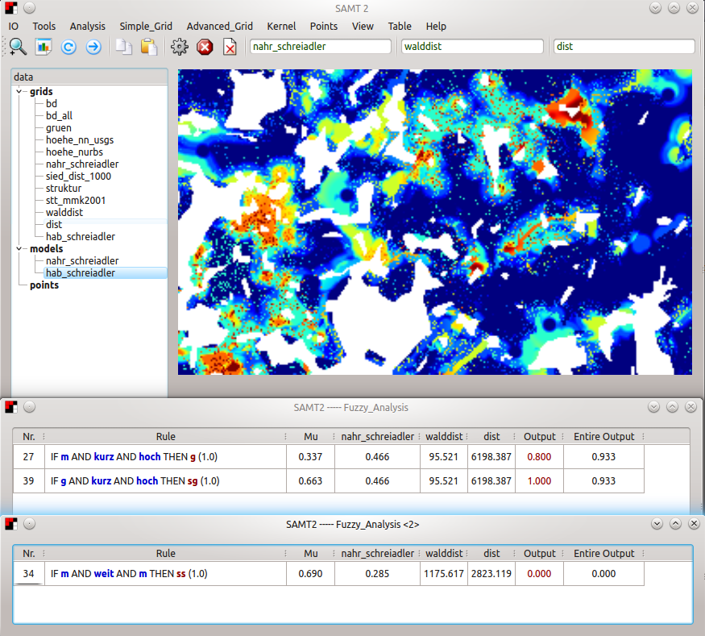
This provides an opportunity to check the fuzzy model with real spatial data and change the model using the fuzzy development tool| 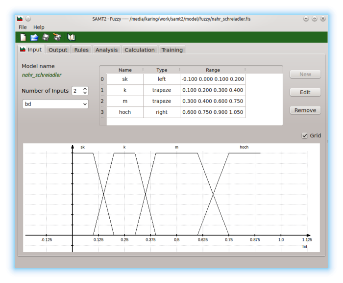 |
| Input |
| 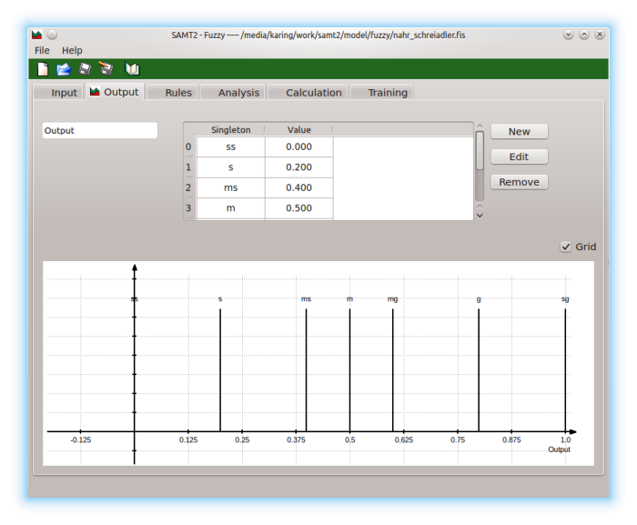 |
| Output |
| 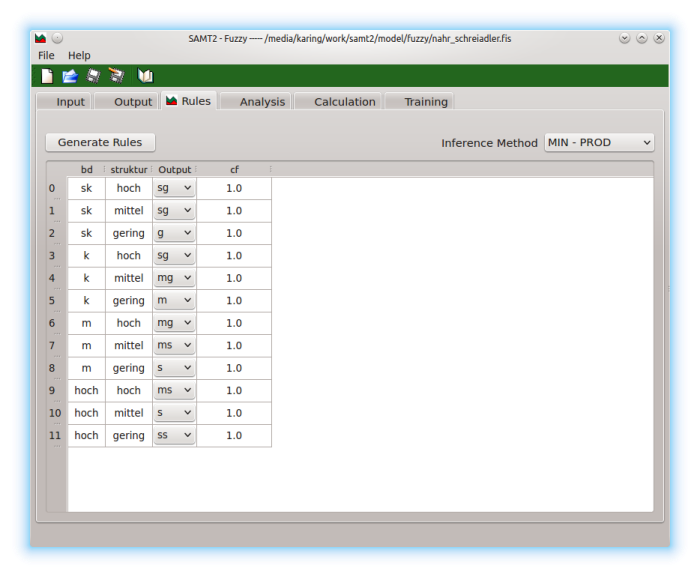 |
| Rules |
| 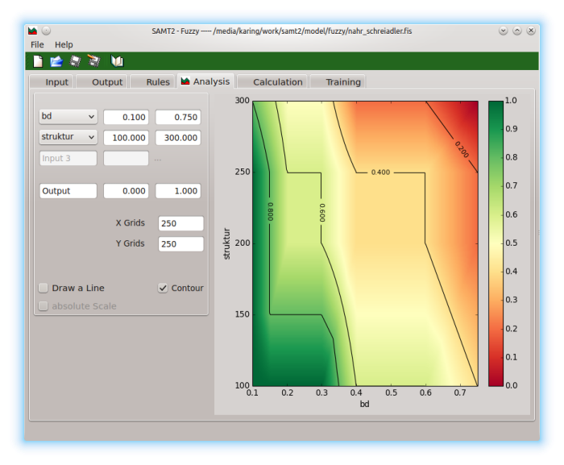 |
| Analysis |